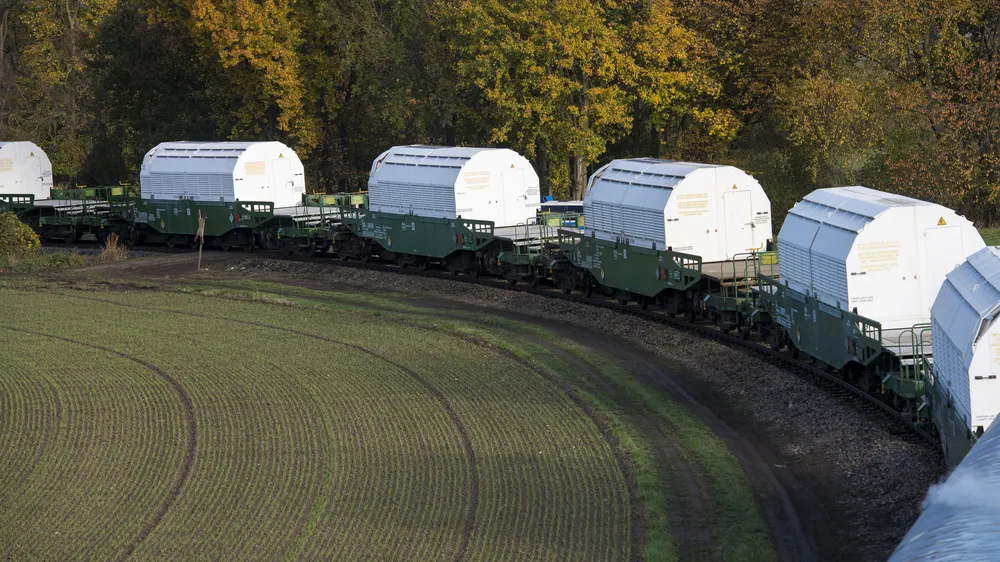
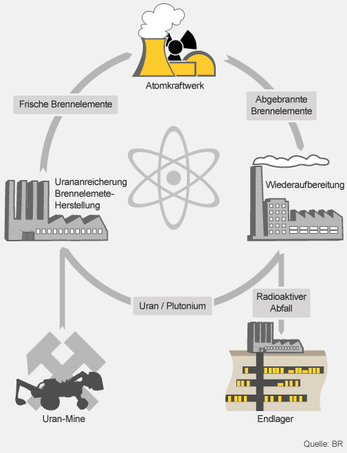
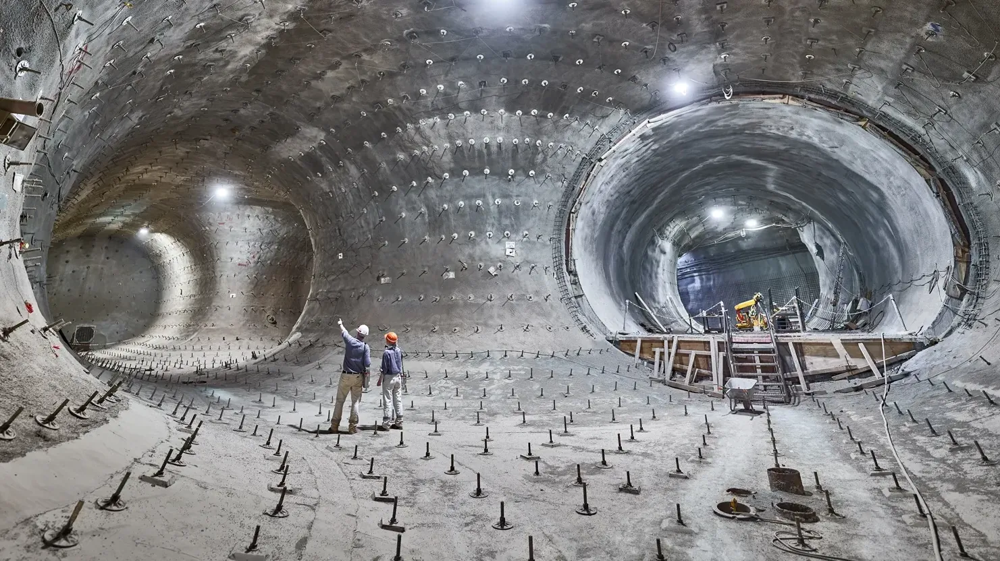

Radioaktiver Abfall
Radioaktiver Abfall entsteht vor allem in Kernkraftwerken, aber auch in der Medizin und in der Forschung. Das große Problem dabei ist, dass viele dieser Stoffe sehr lange gefährlich bleiben. Manche strahlen noch tausende Jahre. Das hängt mit der sogenannten Halbwertszeit zusammen. Das bedeutet, dass radioaktive Stoffe ihre Strahlung nur sehr langsam verlieren. Deshalb reicht es nicht, den Müll einfach irgendwo zu lagern. Er muss über sehr lange Zeit sicher aufbewahrt werden.

Damit radioaktive Stoffe nicht nach außen gelangen, werden sie in speziellen Behältern transportiert und gelagert. Diese Behälter nennt man CASTOR-Behälter. Sie sind besonders stabil gebaut und halten große Belastungen aus, zum Beispiel Hitze, Stürze oder Erschütterungen. So wird verhindert, dass gefährliche Strahlung nach außen dringt.

Auch der Transport von radioaktivem Abfall ist streng geregelt. Es gibt feste Routen, Sicherheitsbegleitung durch die Polizei und viele Kontrollen. Ziel ist es, das Risiko für Menschen und Umwelt so gering wie möglich zu halten. Der Transport ist also kein einfacher Vorgang, sondern Teil eines großen Sicherheitskonzepts.
Nachdem die Brennelemente im Kernkraftwerk benutzt wurden, sind sie noch sehr heiß und stark radioaktiv. Deshalb werden sie zuerst gekühlt. Danach kommen sie in sogenannte Zwischenlager. Dort werden sie über längere Zeit aufbewahrt und ständig überwacht.

Der Weg des radioaktiven Abfalls ist insgesamt ein langer Prozess. Er beginnt mit dem Abbau von Uran, aus dem der Brennstoff hergestellt wird. Dieser wird im Kernkraftwerk genutzt. Danach bleiben abgebrannte Brennelemente übrig, die entweder weiterverarbeitet oder gelagert werden. Am Ende steht die Endlagerung. Tipp: Grafik groß ansehen


Die Endlagerung ist die schwierigste Aufgabe. Dabei wird der radioaktive Abfall tief unter der Erde gelagert. Das Gestein muss sehr stabil sein und verhindern, dass Wasser eindringt und radioaktive Stoffe nach außen transportiert. Zusätzlich gibt es mehrere Schutzschichten, zum Beispiel die Behälter, spezielle Materialien und das umgebende Gestein. Diese sollen zusammen dafür sorgen, dass der Abfall sicher eingeschlossen bleibt.
Das Thema ist nicht nur technisch schwierig, sondern auch ein gesellschaftliches Problem. Es muss entschieden werden, wo ein Endlager gebaut wird und ob dieser Ort wirklich sicher ist. Außerdem geht es um Verantwortung gegenüber zukünftigen Generationen, denn der radioaktive Abfall bleibt viel länger gefährlich, als Menschen leben.
Deshalb ist es wichtig, sich mit dem Thema radioaktiver Abfall zu beschäftigen. Es zeigt, dass Energiegewinnung auch langfristige Folgen haben kann und dass wir verantwortungsvoll mit solchen Risiken umgehen müssen.
Aufgabenstellung: DINA3-Plakat zu radioaktivem Abfall
- Stellt den Ablauf als Pfeilkette dar (z. B. mit ->): Nutzung von Brennstoff -> abgebrannte Brennelemente -> Kühlung -> CASTOR-Behälter und Zwischenlager -> Transport und Kontrollen -> Endlagerung mit Schutzschichten.
- Erklärt mindestens 4 Bilder jeweils in genau 1 vollständigen Satz.
- Nennt mindestens 3 konkrete Folgen oder Belastungen für die Bevölkerung und die Region.
- Nennt mindestens 2 technische Lehren für sicheren Transport, Lagerung und Endlagerung.
- Formuliert einen eigenen Merksatz zu: "Warum ist radioaktiver Abfall ein Thema für Natur und Technik?"
Präsentation: Erstellt ein DINA3-Plakat, fotografiert es mit dem iPhone und präsentiert es über Apple TV. Jede Person in der Gruppe muss etwas vortragen.